Mueve los productos Toledo, hacia la silueta que corresponde, participa y gana un KIT NAVIDEÑO TOLEDO
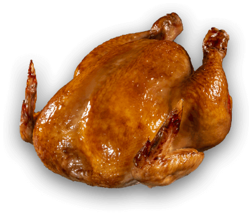
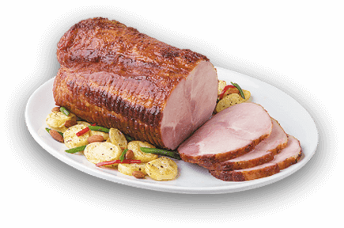
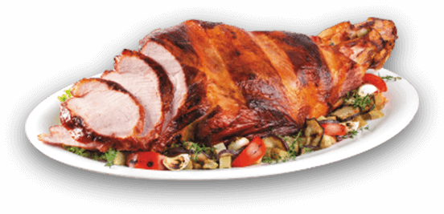
Recetas
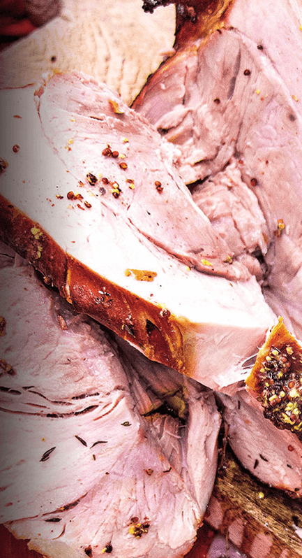
Pierna horneada con ajos rostizados y tomillo
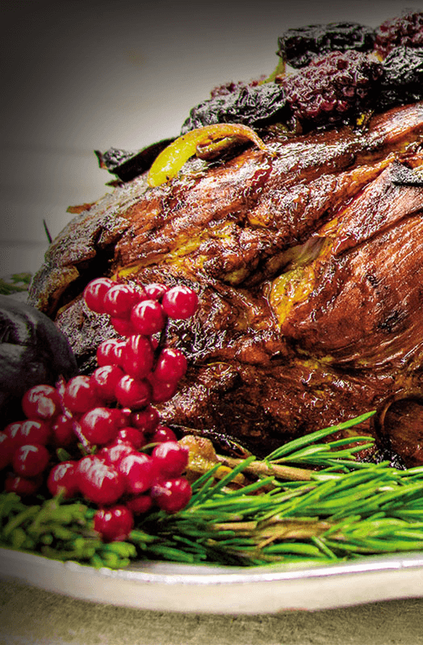
Pollo rostizado aromatizado con hierbas
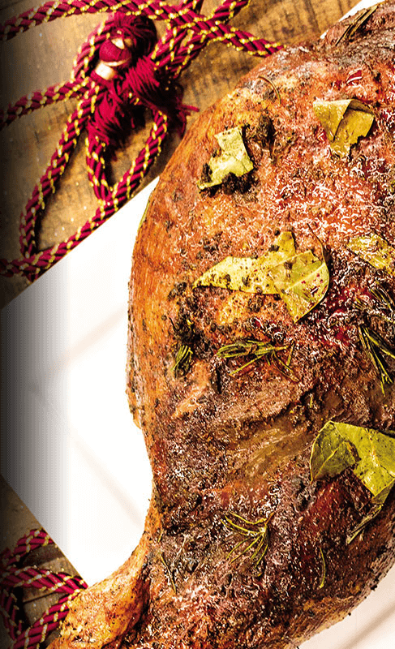
Pescado frito a la chorrillana
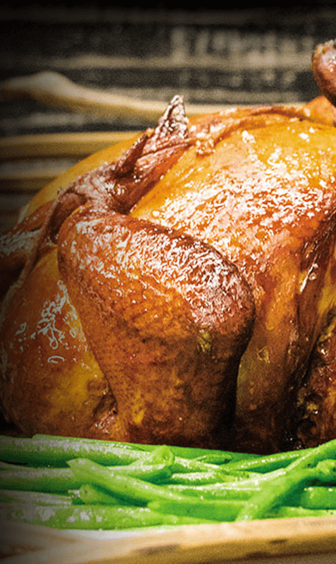
Pollo horneado
Productos
Lista para calentar y servir
Pierna horneada
Gallina rellena
Jamón canadiense
Gallina rellena
Jamón canadiense
Pierna horneada
Jamón canadiense
Pierna horneada
Gallina rellena
Te lo llevamos a casa
3760-3030
7:00 am - 4:00 pm
Horario de entrega
Reconocimientos
Pierna Horneada con ajos rostizados y tomillo
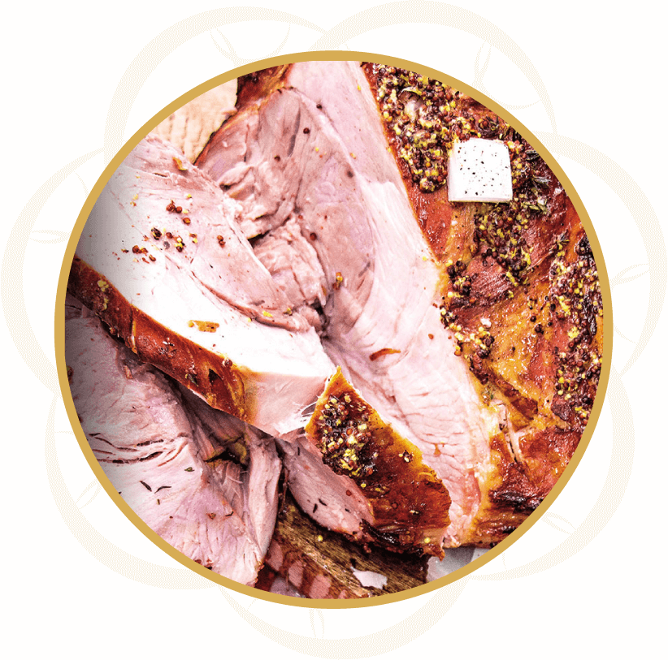
Ingredientes
1 Pierna Horneada Toledo Deli (8 libras aproximadamente)
3 cucharadas de mostaza
2 cabezas de ajo
1/2 taza de vino blanco
1/2 taza de tomillo fresco
1 cebolla en cubos
1 taza de tomates grape
3 onzas de mantequilla a temperatura ambiente
3 cucharadas de salsa soya
2 cucharadas de aceite en oliva
3 cucharadas de vinagre de manzana
Sal y pimienta
Preparación
Precaliente el horno a 350°F
Para rostizar los ajos, caliente un sartén y coloque los dientes de ajo con la salsa soya y el aceite de oliva. Baje la temperatura, tape y deje cocinar por 10 minutos. Reserve
Aparte, con ayuda de una brocha, esparza la mantequilla y la mostaza sobre la Pierna Horneada Toledo Deli.
Haga cortes sobre la pierna con cuchillo pequeño y coloque en esos espacios, los tomates y la cebolla.
Acomode la pierna en un molde para horno y agregue el vino blanco, el vinagre de manzana y el tomillo fresco.
Sazone con sal y pimienta al gusto, deje reposar la pierna en el regrigerador por un mínimo de 2 horas.
Hornee por 45 minutos hasta que tome la coloración deseada y sirva.
Pollo rostizado aromatizado con hierbas
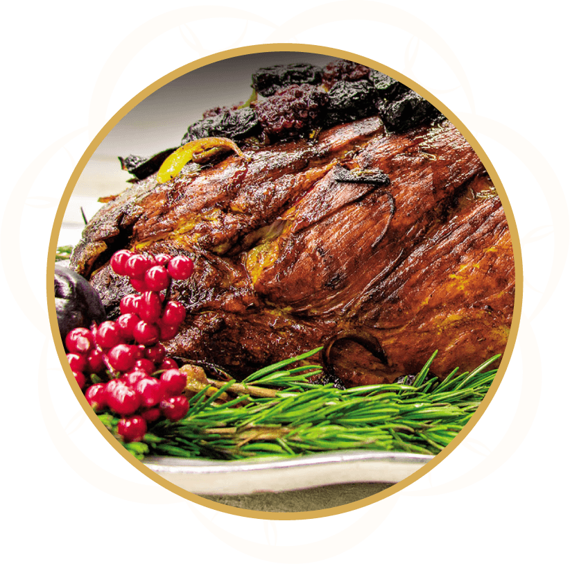
Ingredientes
1/2 kilo de hongos
1 cebolleta
1/2 vaso de vinagre
Tomillo
Cebollino
Agua
Sal
1 pollo de 1 kilo y medio
8 lonchas de panceta
3 dientes de ajo
1 vaso de agua
Romero
Harina de maíz refinada
Aceite virgen extra
Perejil picado
Preparación
Limpia el pollo. Sazónalo y condimenta por dentro y por fuera con media cebolleta, el ajo, el tomillo, el romero, y el cebollino. Introdúcelo en el horno a 200º C.
Cuela la salsa del asado del pollo en un cazo y lígala con un poco de harina de maíz y agua.
Corta las lonchas de panceta y colócalas en una sartén a fuego suave.
Limpia los hongos, filetéalos e incorpóralos a la panceta. Guísalos a fuego suave. Espolvorea con perejil. Sirve el pollo con los hongos y la salsa.
Pescado frito a la chorrillana
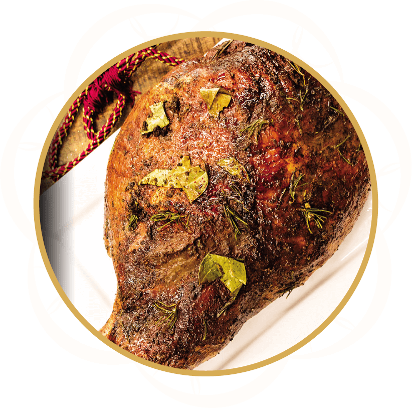
Ingredientes
6 filetes de pescado (900 gr)
Harina Favorita en cantidad necesaria
2 cebollas cortadas en cuñas (300 gr)
3 tomates (360 gr)
1 ají verde cortado en tiras (100 gr)
Jugo de limón
Sal y pimienta al gusto
½ taza de aceite Cocinero (110 ml)
2 dientes de ajo (4 gr)
1 cda. de ají molido (20 gr)
½ cdta. de orégano (3 gr)
Preparación
Condimentar los filetes de pescado con sal y pimienta. Pasarlos por harina y freírlos en abundante aceite caliente.
Para la salsa, coloca una olla con aceite y sofríe la cebolla con el ajo molido y los tomates. Añade el ají amarillo, el vinagre y condimenta con sal, pimienta y orégano. Cocine unos minutos y retire del fuego.
Sirva el pescado y bañe con la salsa y acompañe con arroz y ensalada.
Pollo horneado
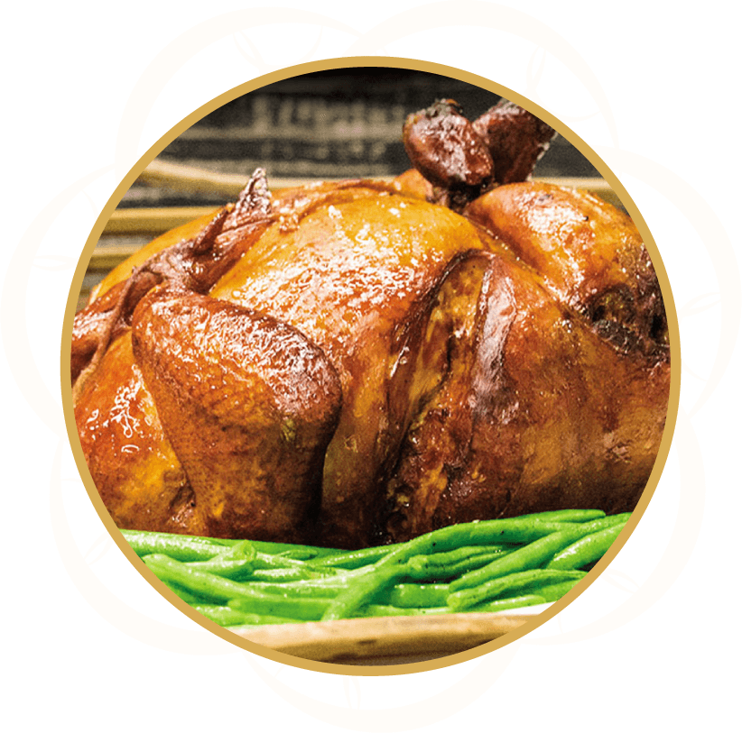
Ingredientes
1 pollo entero
1/2 taza de sal
1 cucharadita de pimienta
1/2 taza de azúcar
1 limón
2 cucharadas de miel
1 cucharada de mostaza
2 cucharadas de salsa de soya
1 cucharada de aceite de oliva
1 ramita de tomillo fresco
4 dientes de ajo, enteros
Preparación
Lava el pollo y sécalo muy bien. Retira los interiores.
En un recipiente grande disuelve 1/2 taza de sal, 1 cucharadita de pimienta, y 1/2 taza de azúcar en 2 ó 3 litros de agua. Sumerge el pollo en este líquido, tápalo, y refrigera dos horas.
Escurre el líquido y seca el pollo. Acomódalo en una fuente o un recipiente para hornear, forrado con papel aluminio, para que después te sea fácil limpiarlo.
Precalienta el horno a 375ºF.
Unta toda la piel del pollo con una mezcla de jugo de limón, miel, mostaza, salsa de soja y aceite de oliva. En la cavidad abdominal del pollo puedes poner el limón exprimido y unas ramitas de tomillo, orégano o cualquier otra hierba fresca que tengas. Esparce los ajos enteros alrededor del pollo.
Cuando el horno esté caliente, pon el pollo dentro y hornea por 1 hora, rociando cada 15 minutos con el jugo de la cocción.
Y ahora sí, córtalo y sírvelo con el jugo de la cocción.